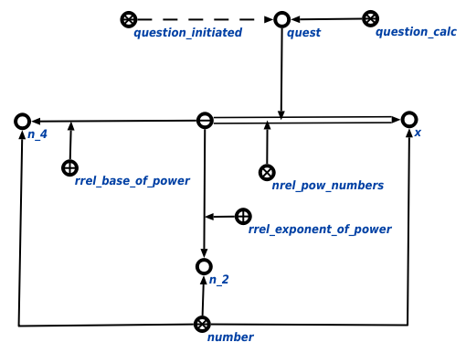

Задачей агента возведения в степень, извлечения корня и нахождения натурального логарифма является возведениe в степень, извлечениe корня и нахождениe натурального логарифма неизвестной величины или числа . Данный агент инициируется при условии появления в памяти вопросной конструкции, соответствующей запросу вычисления математического выражения. Аргументом запроса является либо связка отношения возведение числа в степень*, либо связка отношения возведение величины в степень*. Пример вопросной конструкции представлен ниже:
